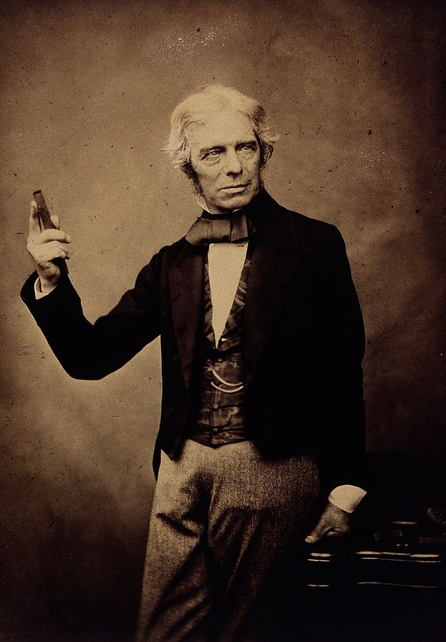
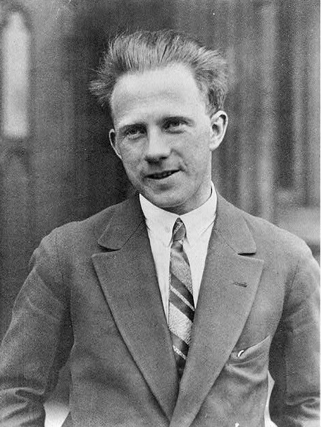
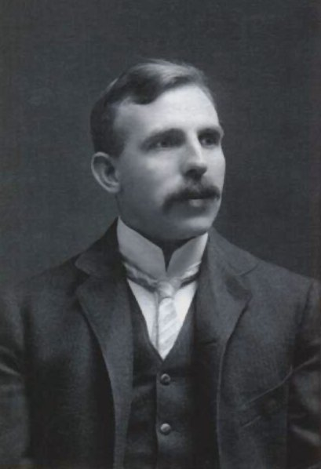

Michael Faraday (1791-1867)

English physicist and chemist whose many experiments contributed greatly to the understanding of electromagnetism.
Faraday, who became one of the greatest scientists of the 19th century, began his career as a chemist.
He wrote a manual of practical chemistry that reveals his mastery of the technical aspects of his art,
discovered a number of new organic compounds, among them benzene, and was the first to liquefy a “permanent” gas.
His major contribution, however, was in the field of
electricity and magnetism. He was the first to produce an electric current from a magnetic field, invented the first
electric motor and dynamo, demonstrated the relation between electricity and chemical bonding, discovered the effect
of magnetism on light, and discovered and named diamagnetism.
Werner Heisenberg (1901-1976)

Was a German theoretical physicist and one of the key pioneers of quantum mechanics.
He is known for the uncertainty principle, which he published in 1927. Heisenberg was awarded the 1932 Nobel Prize in Physics "for the creation of quantum mechanics".
Heisenberg also made contributions to the theories of the hydrodynamics of turbulent flows, the atomic nucleus,
ferromagnetism, cosmic rays, and subatomic particles. He was a principal scientist in the German nuclear weapons
program during World War II. He was also instrumental in planning the first West German nuclear reactor at Karlsruhe,
together with a research reactor in Munich, in 1957.
Ernest Rutherford (1925-1930)

New Zealand-born British physicist considered the greatest experimentalist since Michael Faraday (1791–1867).
Rutherford was the central figure in the study of radioactivity, and with his concept of the nuclear atom he led the
exploration of nuclear physics. He won the Nobel Prize for Chemistry in 1908, was president of the Royal Society (1925–30)
and the British Association for the Advancement of Science (1923), was conferred the Order of Merit in 1925, and was raised
to the peerage as Lord Rutherford of Nelson in 1931.